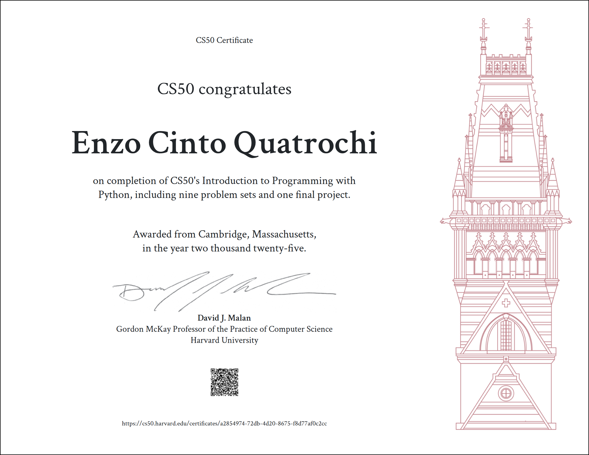
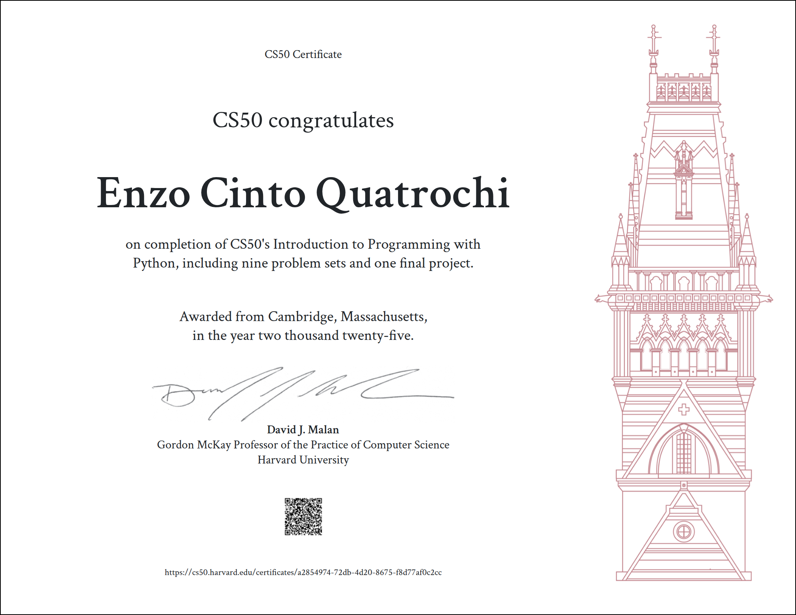

Olá, eu sou o Enzo
DESENVOLVEDOR BACK-END
Sou estudante de engenharia de software na Puc Campinas.
Buscando as respostas que a paixão pela
programação me trouxe desde pequeno.
Sobre Mim
Estou no 6° semestre de engenharia de software na Puc-Campinas. Buscando a oportunidade para aplicar minhas habilidades em desenvolvimento de software.
Além do curso de engenharia de software busco compreender mais sobre a área através de trabalho voluntário e do projeto de extensão da Puc-Campinas, juntamente com cursos extra curriculares.

 

Algumas tecnologias que estou familiarizado são Python, C, TypeScript, Java, Oracle, MySql, MongoDB, Redis.
Projetos
The Guardian
O aplicativo simula uma alugação de armários em tempo real com base na localização do usuário e tecnologia NFC para seu manuseio.
Conheça Mais AquiCS50P Final Project
Desenvolvido como projeto final para o curso do CS50 Introduction to Programming with Python de Harvard o programa realiza uma assinatura digital em arquivos pdf simulando uma validação dos cursos do CS50.
Conheça Mais AquiFideliza
O aplicativo permite que empresas que usufruem do sistema de cartões de fidelidade o usem de maneira digital, evitando a perda do cartão por parte do cliente e sempre estando em contato no dia a dia com ele.
Conheça Mais Aqui